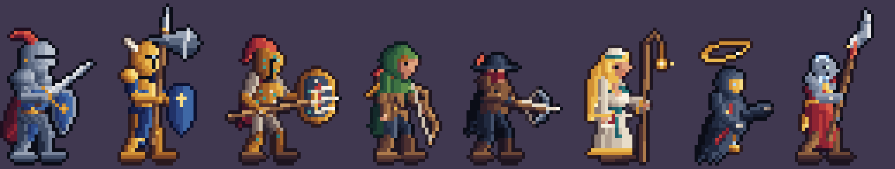
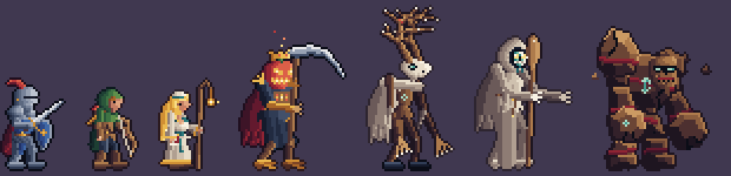
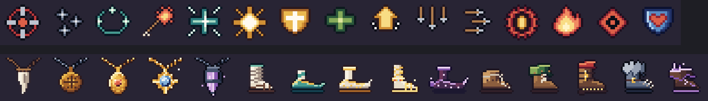
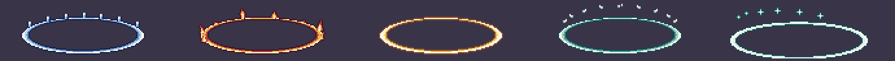
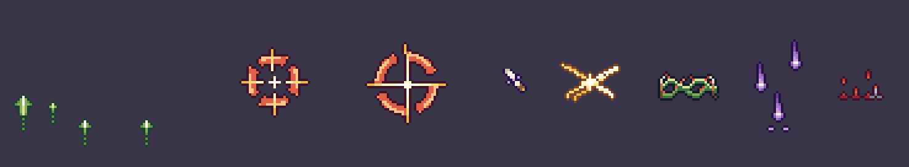

De izquierda a derecha: Knight, templario y legionario (enemigos), Ranger, cazador furtivo, Priest, cantor y monje — todos a la misma escala. Tienes razón: los enemigos están más trabajados. Por qué los héroes se quedan atrás:


Propuesta. Dos caminos (te pregunto en el chat cuál prefieres): A · pulirlos — mismos personajes, algo más altos (~44–46 px), un acento de color de clase, armas y accesorios más grandes, más tonos y brillos; se reaprovechan el rig y sus 14 animaciones por héroe. B · reimaginarlos — diseños nuevos: primero 2–3 conceptos por clase aquí en el lab (quieto y atacando), eliges, y luego el rig y las animaciones. B es más trabajo pero puede dar héroes con más personalidad.
Arriba, los iconos de habilidades de la barra; abajo, iconos de objetos. Los de habilidades se hicieron como provisionales (lo dice su propio código) y se notan: signos planos y genéricos (una cruz, una diana, tres flechas) junto a objetos con volumen, material y brillo. Propuesta: rehacerlos con el nivel de los objetos (16×16, con fondo de su clase), empezando por las 15 de la barra y luego las de las ramas de talentos.

Mantener la línea, Grito de guerra, Nova sagrada, Santuario y Círculo de sanación abren con casi el mismo anillo fino en el suelo, cambiando solo el color. Propuesta: que cada uno tenga su motivo (escudos que se plantan, una onda de choque, rayos de luz, raíces/hojas de cura, runas), como ya tienen sus efectos duraderos.

Las marcas que llevan los enemigos y héroes (velocidad, marca del cazador, punto débil, golpe múltiple, enredo, debilidad, sangrado) funcionan, pero algunas son diminutas (sangrado, punto débil) y se pierden sobre un jefe grande. Propuesta: versiones algo mayores para los cuerpos grandes, como ya hace la marca del cazador.

Enemigos y jefes, fondos de los diez mundos, iconos de objetos y gemas, mascotas, los efectos de los jefes y los nuevos (Lluvia de flechas, Grito de guerra, la columna de llegada), el icono y la pantalla de inicio.